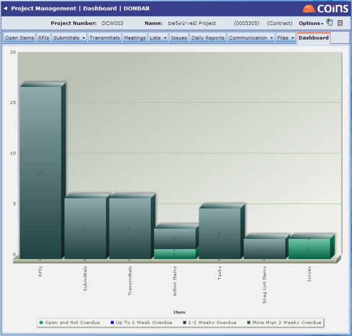

The Open Items tab shows any items that are not marked as closed - a "list of things that need doing".
Items are:
You can filter on items that are assigned to you, on items that are overdue, and on specific item types.
The Dashboard tab shows a graphical summary of open items on the project, broken down into items that are not overdue, items that are up to one week overdue, and items that are two or more weeks overdue.

You can dig deeper to show summaries of open items by impact and importance, and by whether they are assigned to you or to others. You can configure which items the dashboard shows.
The All Items Search helps you find items by searching for text in any of the items.